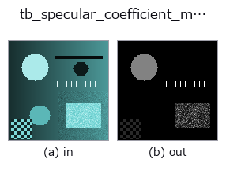

typed op• 資料種類:rgbimage → image
• 呼叫:fullseye.apply(img, "tb_specular_coefficient_map", a=0.5, b=0.5)(2-D 的模型是一張圖 + 兩個純量旋鈕 a,b∈[0,1])

*圖為在 128×128 合成輸入上實際執行的輸出。左為輸入，右為輸出。點雲以俯視散點顯示(亮度 = z)，一維序列為折線，體資料為沿 z 的最大值投影，影片為中間影格，複數影像為振幅；無法成像的回傳值直接顯示數值。*
*旋鈕 a 不改變輸出(實測: 0.1 / 0.5 / 0.9 相同)。*
*旋鈕 b 不改變輸出(實測: 0.1 / 0.5 / 0.9 相同)。*
階段(前置運算子 → 本運算子，由左至右):
▸ tb_specular_coefficient_map: stages (docs site)
換別的影像(合成場景 / 照片 / 硬幣。上排為輸入，下排為對應輸出。旋鈕取預設):
▸ tb_specular_coefficient_map: other inputs (docs site)
雙色反射模型中的純量介面（鏡面）係數。→ (H, W)。
> 以下的詳細說明為原文 —— 摘要與標題已翻譯。
The same decomposition as :func:specular_diffuse_split, returning the
scalar `m_s(x) instead of the coloured image m_s(x) * G`. That scalar
is what an inspection routine thresholds: it is the amount of light the
surface reflected *as a mirror does*, in the units of the input radiance,
and it is zero wherever the surface behaved as a Lambertian body.
`specular_coefficient_map(...) * illuminant_unit` equals the second return
value of :func:specular_diffuse_split exactly, by construction — the two
operators share one core.
Arguments, guards and honest limits are identical to
:func:specular_diffuse_split — including the fact that the two guards
bound gross violations only.
Raises `ValueError`: exactly the same conditions as
:func:specular_diffuse_split (invalid image, invalid illuminant,
identically zero image, body colour parallel to the illuminant, either
guard firing, fewer than 3 pixels on the uniform-body route, invalid
*body_rgb*).
Typed bridge of the specular op `specular_coefficient_map into the 2-D evolution registry: the same implementation, called under the op(v, a, b) convention. a drives max_rank_ratio (default 0.1) and b drives max_negative_frac` (default 0.02).
• 範例資料目錄(下載 URL / 授權) —— 2-D 用 skimage.data(BSD/公有領域)加合成圖,3-D 給出真實資料源(Stanford/PDS 等)的下載 URL。
• 運算子來歷與參考文獻 —— 該運算子族所依據的研究/方法出處。
下面的程式已確認可以執行(與圖相同的輸入)。在 Studio 說明中，此區塊會變成按鈕，可當場載入並執行。
img_to_rgb 0.50 0.50 tb_specular_coefficient_map 0.50 0.50
▸ Load this pipeline · Load & run
下面的範例呼叫的是底層帳本運算子 specular_coefficient_map。此橋接運算子只是把同一實作適配為 fn(v, a, b) 慣例，行為完全相同(只是呼叫形式不同)。
• specular_photometric — py -3.11 examples/specular_photometric.py
image 作為輸入)identity · gaussian · mean_box · bilateral · unsharp · median · min_filter · max_filter
typed)tb_points_to_voxel · tb_estimate_point_normals · tb_iss_keypoints · tb_angle_3points · tb_project_points · tb_render_point_depth · tb_statistical_outlier_removal · tb_radius_outlier_removal
*Provenance: ops.py — 2D 運算子登記表。本條目由 tools/opdocs.py md 自動產生(請勿手動編輯)。*
© 2026 Kazufumi Furuse — Fullseye operator documentation. Licensed under Apache-2.0.
{kind=link}
{kind=link}